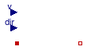

This package provides component models to compute heat convection.
Extends from Modelica.Icons.VariantsPackage (Icon for package containing variants).
| Name | Description |
|---|---|
| Exterior | Model for a exterior (outside) convective heat transfer |
| Interior | Model for a interior (room-side) convective heat transfer |
| Collection of models that illustrate model use and test models | |
| Functions for convective heat transfer | |
| Package with base classes for Buildings.HeatTransfer.Convection |

conMod determines the model that is used to compute
the heat transfer coefficient:
If conMod=
Buildings.HeatTransfer.Types.ExteriorConvection.Fixed
, then
the convective heat transfer coefficient is set to the value specified by the parameter
hFixed.
If conMod=
Buildings.HeatTransfer.Types.ExteriorConvection.TemperatureWind
,
then the convective heat transfer coefficient is
computed based on wind speed, wind direction and temperature difference.
The total convection coefficient ht is the sum of the temperature-driven free convection coefficient hn and the wind-driven forced convection coefficient hf,
ht = hn + hf
The free convection coefficient hn is computed in the same way as in Buildings.HeatTransfer.Convection.Interior. The forced convection coefficient hf is computed based on a correlation by Sparrow, Ramsey, and Mass (1979), which ishf = 2.537 W R √( P v ⁄ A )
where W=1 for windward surfaces and W=0.5 for leeward surfaces, with leeward defined as greater than 100 degrees from normal incidence, R is a surface roughness multiplier, P is the perimeter of the surface and A is the area of the surface. This is the same equation as implemented in EnergyPlus 6.0.
We make the simplified assumption that the surface is square, and hence we set
hf = 2.537 W R √( 4 v ⁄ √(A) )
The surface roughness is specified by the parameter surfaceRoughness
which has to be set to a type of
Buildings.HeatTransfer.Types.SurfaceRoughness.The coefficients for the surface roughness are
| Roughness index | R | Example material |
|---|---|---|
| VeryRough | 2.17 | Stucco |
| Rough | 1.67 | Brick |
| MediumRough | 1.52 | Concrete |
| MediumSmooth | 1.13 | Clear pine |
| Smooth | 1.11 | Smooth plaster |
| VerySmooth | 1.00 | Glass |
Sparrow, E. M., J. W. Ramsey, and E. A. Mass. 1979. Effect of Finite Width on Heat Transfer and Fluid Flow about an Inclined Rectangular Plate. Journal of Heat Transfer, Vol. 101, p. 204.
Walton, G. N. 1981. Passive Solar Extension of the Building Loads Analysis and System Thermodynamics (BLAST) Program, Technical Report, United States Army Construction Engineering Research Laboratory, Champaign, IL.
Extends from Buildings.HeatTransfer.Convection.BaseClasses.PartialConvection (Partial model for heat convection).
| Type | Name | Default | Description |
|---|---|---|---|
| Area | A | Heat transfer area [m2] | |
| CoefficientOfHeatTransfer | hFixed | 3 | Constant convection coefficient [W/(m2.K)] |
| Angle | til | Surface tilt [rad] | |
| ExteriorConvection | conMod | Buildings.HeatTransfer.Types... | Convective heat transfer model |
| SurfaceRoughness | roughness | Buildings.HeatTransfer.Types... | Surface roughness |
| Angle | azi | Surface azimuth [rad] | |
| Initialization | |||
| TemperatureDifference | dT.start | 0 | = solid.T - fluid.T [K] |
| Type | Name | Description |
|---|---|---|
| HeatPort_a | solid | |
| HeatPort_b | fluid | |
| input RealInput | v | Wind speed [m/s] |
| input RealInput | dir | Wind direction (0=wind from North) [rad] |
model Exterior
"Model for a exterior (outside) convective heat transfer"
extends Buildings.HeatTransfer.Convection.BaseClasses.PartialConvection;
parameter Buildings.HeatTransfer.Types.ExteriorConvection conMod=
Buildings.HeatTransfer.Types.ExteriorConvection.TemperatureWind
"Convective heat transfer model";
parameter Buildings.HeatTransfer.Types.SurfaceRoughness roughness=
Buildings.HeatTransfer.Types.SurfaceRoughness.Medium "Surface roughness";
parameter Modelica.SIunits.Angle azi "Surface azimuth";
Modelica.Blocks.Interfaces.RealInput v(unit="m/s") "Wind speed";
Modelica.Blocks.Interfaces.RealInput dir(unit="rad", displayUnit="deg",
min=0, max=2*Modelica.Constants.pi) "Wind direction (0=wind from North)";
Modelica.SIunits.CoefficientOfHeatTransfer hF
"Convective heat transfer coefficient due to forced convection";
Modelica.SIunits.HeatFlux qN_flow
"Convective heat flux from solid -> fluid due to natural convection";
Modelica.SIunits.HeatFlux qF_flow
"Convective heat flux from solid -> fluid due to forced convection";
protected
parameter Real R(fixed=false) "Surface roughness";
Real W(min=0.5, max=1) "Wind direction modifier";
initial equation
if (roughness == Buildings.HeatTransfer.Types.SurfaceRoughness.VeryRough) then
R=2.17;
elseif (roughness == Buildings.HeatTransfer.Types.SurfaceRoughness.Rough) then
R=1.67;
elseif (roughness == Buildings.HeatTransfer.Types.SurfaceRoughness.Medium) then
R=1.52;
elseif (roughness == Buildings.HeatTransfer.Types.SurfaceRoughness.MediumSmooth) then
R=1.13;
elseif (roughness == Buildings.HeatTransfer.Types.SurfaceRoughness.Smooth) then
R=1.11;
elseif (roughness == Buildings.HeatTransfer.Types.SurfaceRoughness.VerySmooth) then
R=1.00;
else
R=0;
end if;
equation
if (conMod == Buildings.HeatTransfer.Types.ExteriorConvection.Fixed) then
qN_flow = hFixed * dT;
W = 1;
hF = 0;
qF_flow = 0;
else
// Even if hCon is a step function with a step at zero,
// the product hCon*dT is differentiable at zero with
// a continuous first derivative
if isCeiling then
qN_flow = Buildings.HeatTransfer.Convection.Functions.HeatFlux.ceiling(
dT=dT);
elseif isFloor then
qN_flow = Buildings.HeatTransfer.Convection.Functions.HeatFlux.floor(
dT=dT);
else
qN_flow = Buildings.HeatTransfer.Convection.Functions.HeatFlux.wall(
dT=dT);
end if;
// Forced convection
W = Buildings.HeatTransfer.Convection.Functions.windDirectionModifier(
azi=azi, dir=dir);
hF = 2.537 * W * R * 2 / A^(0.25) *
Buildings.Utilities.Math.Functions.regNonZeroPower(x=v, n=0.5, delta=0.5);
qF_flow = hF*dT;
end if;
q_flow = qN_flow + qF_flow;
end Exterior;

conMod determines the model that is used to compute
the heat transfer coefficient:
If conMod=
Buildings.HeatTransfer.Types.InteriorConvection.Fixed, then
the convective heat transfer coefficient is set to the value specified by the parameter
hFixed.
If conMod=
Buildings.HeatTransfer.Types.InteriorConvection.Temperature, then
the convective heat tranfer coefficient is a function of the temperature difference.
The convective heat flux is computed using
Extends from Buildings.HeatTransfer.Convection.BaseClasses.PartialConvection (Partial model for heat convection).
| Type | Name | Default | Description |
|---|---|---|---|
| Area | A | Heat transfer area [m2] | |
| CoefficientOfHeatTransfer | hFixed | 3 | Constant convection coefficient [W/(m2.K)] |
| Angle | til | Surface tilt [rad] | |
| InteriorConvection | conMod | Buildings.HeatTransfer.Types... | Convective heat transfer model |
| Initialization | |||
| TemperatureDifference | dT.start | 0 | = solid.T - fluid.T [K] |
| Advanced | |||
| Boolean | homotopyInitialization | true | = true, use homotopy method |
| Type | Name | Description |
|---|---|---|
| HeatPort_a | solid | |
| HeatPort_b | fluid |
model Interior
"Model for a interior (room-side) convective heat transfer"
extends Buildings.HeatTransfer.Convection.BaseClasses.PartialConvection;
parameter Buildings.HeatTransfer.Types.InteriorConvection conMod=
Buildings.HeatTransfer.Types.InteriorConvection.Fixed
"Convective heat transfer model";
parameter Boolean homotopyInitialization = true "= true, use homotopy method";
protected
constant Modelica.SIunits.Temperature dT0 = 2
"Initial temperature used in homotopy method";
equation
if (conMod == Buildings.HeatTransfer.Types.InteriorConvection.Fixed) then
q_flow = hFixed * dT;
else
// Even if hCon is a step function with a step at zero,
// the product hCon*dT is differentiable at zero with
// a continuous first derivative
if homotopyInitialization then
if isCeiling then
q_flow = homotopy(actual=Buildings.HeatTransfer.Convection.Functions.HeatFlux.ceiling(dT=dT),
simplified=dT/dT0*Buildings.HeatTransfer.Convection.Functions.HeatFlux.ceiling(dT=dT0));
elseif isFloor then
q_flow = homotopy(actual=Buildings.HeatTransfer.Convection.Functions.HeatFlux.floor(dT=dT),
simplified=dT/dT0*Buildings.HeatTransfer.Convection.Functions.HeatFlux.floor(dT=dT0));
else
q_flow = homotopy(actual=Buildings.HeatTransfer.Convection.Functions.HeatFlux.wall(dT=dT),
simplified=dT/dT0*Buildings.HeatTransfer.Convection.Functions.HeatFlux.wall(dT=dT0));
end if;
else
if isCeiling then
q_flow = Buildings.HeatTransfer.Convection.Functions.HeatFlux.ceiling(dT=dT);
elseif isFloor then
q_flow = Buildings.HeatTransfer.Convection.Functions.HeatFlux.floor(dT=dT);
else
q_flow = Buildings.HeatTransfer.Convection.Functions.HeatFlux.wall(dT=dT);
end if;
end if;
end if;
end Interior;